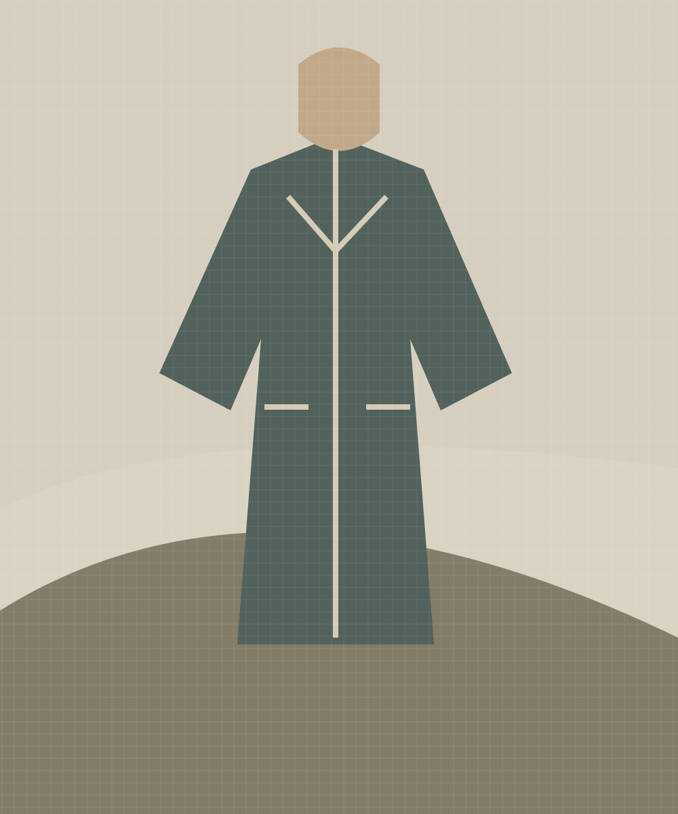

Clothing · 13 November 2026
Clothes that gather memories
On the small signs of a garment well loved.
Words by Ellis Rowan · Fictional editorial

A good coat becomes part of the route we take each morning. Its pockets learn the shape of our hands; its shoulders soften with the seasons.
In our imagined workshop, a length of substantial cloth lies beside a handful of wooden buttons. The first decision is a practical one: how will this feel on an ordinary day?
Room for everyday life
Generous sleeves allow a woollen layer underneath. Deep pockets leave a place for a notebook. These small choices create a garment that is easy to return to.
“The most familiar things often hold the richest stories.”— Original LOAM editorial text
A little care, often
Brushing, airing and mending are quiet rituals. A new stitch can become a visible reminder that a useful thing deserves another chapter.
Discover the seasonal concept
Leave a comment
Local demonstration only. Your comment is previewed below; it is never published or saved.